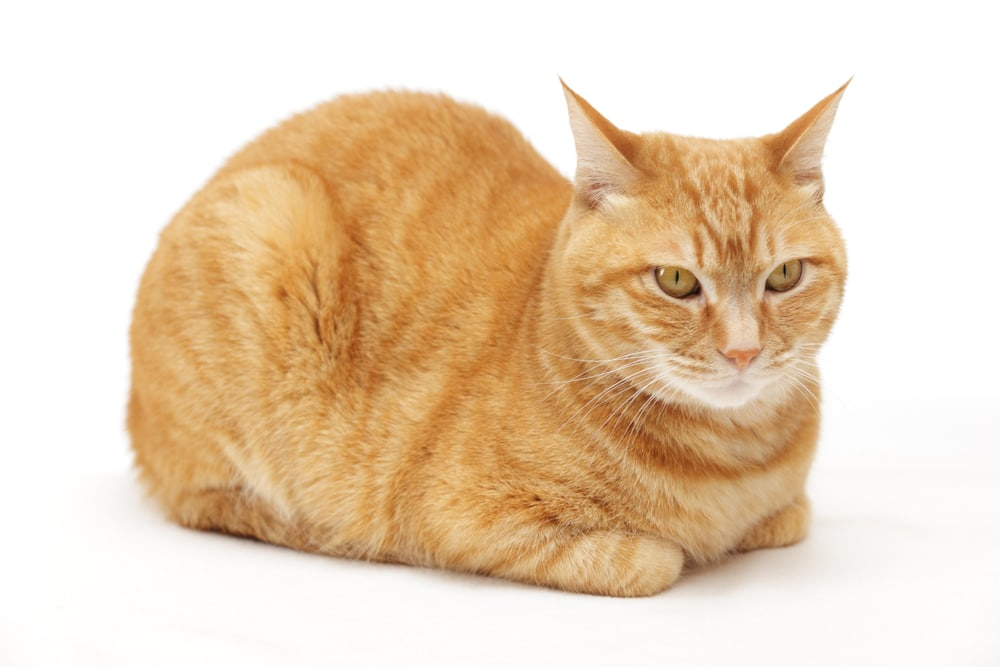

All About Cats
Quick Facts:
- Scientific Name: Felis catus
- Type: Mammals
- Diet: Carnivore
- Size: 28 inches
- Weight: 5 to 20 pounds
Top Predators:
- Foxes
- Wolves
- Owls
About:
In the U.S. alone, cats reign over about 45.3 million households. There are at least 45 domestic breeds, which differ widely in features such as coat color,
tail length, hair texture, and temperament, according to the Cat Fancier’s Association. Cats are the coolest thing to roam the planet earth.
They are everywhere in my instagram reels and tiktoks, and I love all of the cat videos I am given. If I owned a cat, I'd make sure it's fat so I can laugh at it and then I would be the happiest man alive..
Images:

Citations
Kids Inquiry of Diverse Species
National Geographic